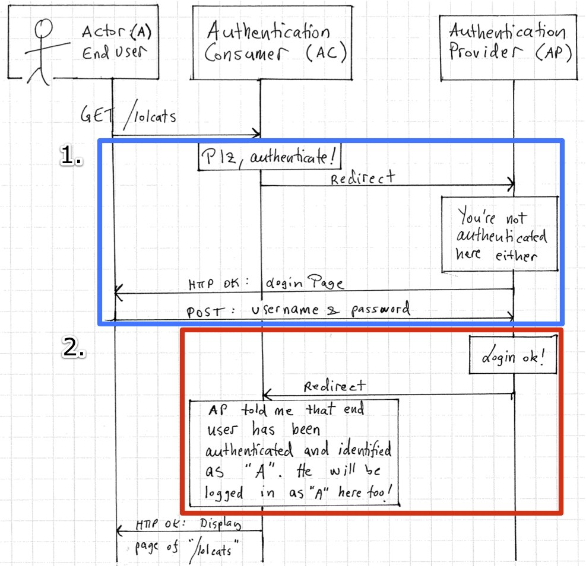
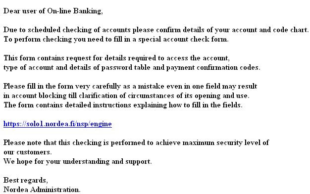
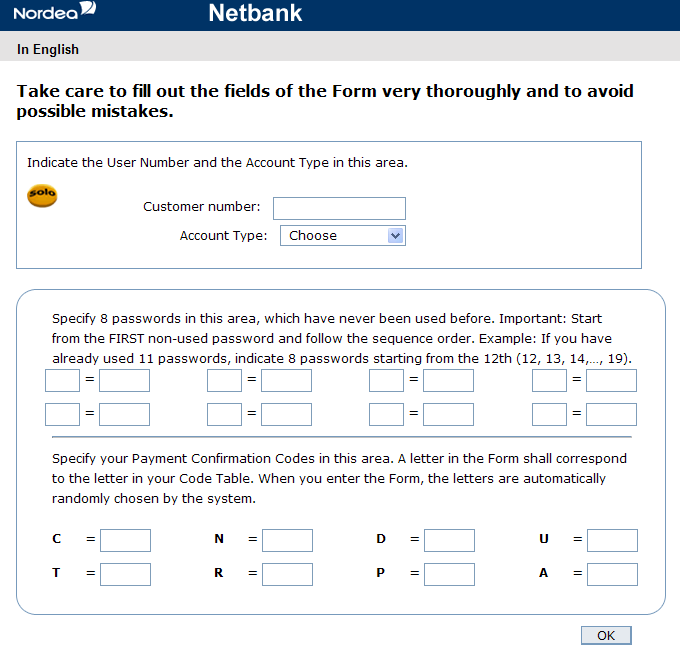

Introduction
When the access to an object is restricted, the object must be controlled by a guard. The guard has two tasks that could be applied individually or in combination: identify the requester and decide whether access to the object should be granted. In order to do its work, the guard needs a trustworthy way to know both the source of the request and the access rule. Obtaining the source of the request is called "authentication" and interpreting the access rule is called "authorization" lampson_distributed_1992. In a nutshell authentication answers the question "Who said this?", and authorization answers the question "Who is trusted to access this?" [CITE, CITE, CITE].
From the end user's usability point of view, the most unobtrusive way for a user to authenticate to a service would be blindly trusting his claim of his identity. Since the obvious security concerns render this kind of an approach impractical, the end user must present sufficient credentials in order to gain access. A conventional web service usually maintains a credential database of its own, which leads users to bear the burden of learning a new password for each service they want to use. A substansial amount of users don't want to manage password: they simply use the same password among multiple services. Since using a different password would only affect the symptom instead of the cause, there clearly seems to be the need for a single sign on solution where a user can access multiple sites with a single piece of credentials.
There are also other ways to restrict access to an object. A popular method in web context is to obfuscate the universal resource indentifier (URI) which is a fundamental part of the resource's address. For example image filenames in Yahoo's Flickr photo sharing site and attachment filenames in Google's GMail include a hash that appears as a random string. Thus, although the resource is ultimately public since access to it is not monitored by a guard, it is available to only those who know the exact location. This kind of an approach does not require a guard monitoring the access by taking care of authentication and authorization. However, this technique is outside the scope of this thesis even though it could be used to complement a monitored access control system.
TÄLLÄINEN TARVITAAN: OMA TARVE (LV)
Sen jälkeen ,mitä on tarjolla
- it is not clear which existing technique should be chosen as a replacement
- check the picture at Auth in distrib. systems page 275
- The problem domain is restricted to only include approaches that are compatible with the cloud computing paradigm.
- Oletus: Hardware, local OS, (ja encryption) oletetaan tässä yhteydessä luotetuiksi
Research Questions and the Problem Domain
Distributed access control has a couple of fundamental issues that need to be taken care of. One of them is secure communication between the authentication provider and the authentication consumer. The communication channel is assumed safe in the scope of this thesis because the transportation layer is secured and authenticated by SSL/TLS. This thesis is focused on the application layer where the first question lies in how the appropriate authentication provider is discovered.
The problem of discovery and end user redirection is illustrated in figure [IMG: X] as a blue rectangle (number 1).
Another piece of the puzzle is building trust. There are two parties in the high-level scheme: the service which a user is wanting to access, and the service which holds the information about user's credentials. Let's call the former service authentication consumer ("AC") and the latter authentication provider ("AP"). After the user has successfully identified himself with "AP", he will have an authenticated session with "AP". In other words the AP now has appropriate information about the end user's identity. However, the service "AC", which the user really wants to access, still does not know who the user is. The second question arises: how can the appropriate information regarding the user's identity be delivered from "AP" to "AC"? This problem of building trust between authentication parties is illustrated in figure [IMG: X] as a red rectangle (number 2).

A Brief Review of a Case of Central Authentication Service
The Finnish Museum of Natural History has a single sign on system implemented with a homegrown authentication protocol. During the Autumn 2010 a severe security vulnerability was discovered in the way it builds trust between the authentication provider and the consuming services. There exists several solutions to fix the problem having fixing the current implementation and applying an existing authentication standard on the opposite ends of the solution range. It is definitely unclear which choice is appropriate: if the current homegrown protocol was previously insecure, what if another vulnerability exists also? On the other hand, the existing authentication standards seem to be much more complicated by their design.
A crucial requirement for the Museum's system is to have all information regarding users' profile administrated only in place, and allow that particular system be responsible to authenticate users for all the other services. The nature of the environment is distributed with the authentication provider having a role of a trusted third party. There exists several different authentication and authorization standards for this problem domain, each one having down- and upsides of its own. This thesis provides a proposal table for choosing the right set standards for a particular set of requirements.
At the beginning of 2009 OpenID had not yet been widely adopted and looked immature despite all the promises [CITE]. However, before the end of year 2009 major big companies, such as Google, Microsoft, PayPal, Flickr, VeriSign, WordPress and Yahoo, had announced support for OpenID enabled accounts openid_year2009. It was clear, that OpenID was starting to become a widely adopted standard for authentication. However, if a similar authentication system were to be implemented now, OpenID would still appear complicated. This thesis tries to answer why should one implement a basic setup of his own instead of applying a more complicated existing solution.
Providing Identity
Concept Definitions
Confidentiality
ISO standard 7498-2 iso_cia defines confidentiality as "ensuring that information is accessible only to those authorized to have access" having authorization as a function of the policy definition phase.
Integrity
Availability
The Cloud Paradigm
Software as a Service (SaaS)
Access Control List (ACL)
Open Standard
Encryption
"If you think cryptography will solve your security problems, you don't understand encryption and you don't understand security." - Bruce Schneier [CITE]
Decentralized architecture
Centralized architecture
Terminology
Relying Party (RP)
Identity Provider (IdP)
Token
URL
XRI
Yadis XRDS
User-centric Identity
Giving full control of identity lifecycle to the customer is a prerequisite for user-centric identity. It allows the customer decide when and how their identity information can be accessed open_identity_management_saas_2009. The term "user-centric identity management" is understood to mean digital identity infrastructure where an individual end-user has substantially independent control over the use of their identifier(s) and personally-identifiable information openid_2.0_platform_2009. OpenID specification provides user-centric infrastructure with two overall architectures: an address-based and a card-based identity.
An address-based identity employs a unique digital address to identify a user. The identification process is based on proving the ownership of a particular address. For example an OpenID identity address may be composed of a URL or an XRI. One of the first steps in the OpenID authentication process is dereferencing the identity address to discover and invoke the associated identity service openid_2.0_platform_2009.
A card-based identity uses a digital token that contains or references a collection of attributes that may individually or collectively identify the user openid_2.0_platform_2009. The collection provides the necessary information to accomplish an identity-based transaction. Technologies that use the WS-Trust protocol employ a card-based identity.
According to Recordon and Reed openid_2.0_platform_2009 both approaches can be applied individually, but they also can complement each other. As an example an address-based identity could be used to discover a card-based identity, and a card-based identity could contain one or more address-based identities.
Concepts of Authentication and Authorization
Authentication is usually considered a synonym for confirming the identity of a person. In order to gain trust, a user must first be identified. Claiming an identity, however, does not necessarily lead to trust between the idenfitied user and the actual service: it only means that this visitor is able to present credentials for this identity. However, acquiring trust requires presenting identify first [CITE].
Granting someone permissions to access a requested resource is generally called authorization. The authorization transaction is usually preceded by an authentication process to verify the identity of the requester. When the requester has been identified, the access control process checks that he be authorized to use the targeted resource. There are also cases where access can be granted without actually identifying the requester. Possible cases are requests that could, for instance, be authorized by requester's geological source address or simply by the time of the day. A request may also be authorized by an access token or ticket which grant access without proving the identity of the requester.
Lampson et al. define a theory of authentication in distributed systems lampson_distributed_1992. They create an abstraction of many special cases to basic concepts of "principal, statement and channel". If s is a statement, for instance a request, then authentication answers the question "Who said s?" with a principal. Likewise, if o is an object, then authorization answers the question "Who is trusted to access o?" with a principal. A simple principal could for example be a person ("Peter"), a machine ("dac-123") or a role ("Manager"). A compound principal is build up of other principals such as "Peter as Manager" or "dac-123 as Department of CS" correspondingly.
According to the theory of Lampson et al. lampson_distributed_1992 a channel is the only kind of principal that can directly make statements to a computer. For example, there is no direct path from a person to a computer, that is, communication must be over some channel, involving keystrokes, wires, networks et cetera. Naturally some of these channels are not secure.
Security Considerations
Your OpenID identity provider is able to track all websites you log into. If you have only one OpenID, usability is high, but traceability is equally high.
Phising
Phising is a form of online identity theft targetting to steal sensitive information from an end user phising_attacks_and_solutions_2007, why_phising_works_06, suspectibility_to_phising_2006.
Victims are tricked into providing such information by a combination of spoofing techniques and social engineering visual_similarity_phising_2008. The process usually involves a fraudulent web site imitating a specific authentic site. The goal is to trick the user submitting his secret information to the fraudulent imitation site that could be later used by somebody else to access the original service. The user can be lured to a fraudulent phishing site in many ways. The most common way is to send the victim an email or instant message that asks him to visit a malicious site. The goal is to acquire sensitive information, such as a username and password, by masquerading the malicious site as a particular trustworthy entity.
Phising is a widespread problem on the internet. Additionally its effects are especially emphasized in a single sign-on system. Studies of Dhamija et al. why_phising_works_06 show that in order for a phising attempt to be effective, it must be targeted to a specific system. Since a single sign-on system provides access to multiple services, a successful phising attempt targeted against the identity provider affects all its identity consumers. Therefore identity providers are a viable target for phising by their very nature [CITE, CITE, CITE].
Being an attractive target for phising might give an impression that single sign-on systems should be avoided for business critical services [CITE]. Nevertheless, studies have been made concluding that having a single service for identification might actually improve the general security of the service that are depending on it [CITE]. One big factor is that by nature any web service is, to some level, vulnerable to phising [CITE tai selitä aiemmin]. As previously explained, using a central identification provider allows a malicious party to focus his attack on that particular provider. But on the other hand, this also allows the service administrators to focus on the issues on only one particular identity provider [CITE]. Thus, if identification provider were to be implemented on a per service basis, it would require focusing on phising issues on each and every one of them.
Phising Illustrated
Several studies have shown [CITE, CITE, CITE] that humans are especially vulnerable to visual deception. Dhamija et al. why_phising_works_06 provide empirical evidence about which phising strategies are successful at deceiving average users. Their study shows that some visual deception attacks can fool even the most sophisticated users. In order to "design web browsers, websites and other tools to shield users from such attacks," it is necessary to "understand which attack strategies are successful, and what proportion of users they fool." why_phising_works_06.
The biggest nordic bank Nordea has been targeted several times for different phising attacks. A typical method has been to send a message illustrated in image [IMG: Nordea1] to thousands of recipients. Not all of the recipients are customers of the target service provider, but some are. And although not all of the customers will get fooled, some will. And because even one fooled customer means money for the attackers, phising is a lucrative criminal business.
Phising message in image [IMG: Nordea1] includes an authentic looking link to the web bank and a request to go and fill all the one time passwords. The hyperlink is obfuscated: it does not lead where it points. Instead the link leads to a phising site illustrated in image [IMG: Nordea2] where the victim is supposed to fill in their unused passwords and all of the confirmation codes for Nordea's online banking nordea_fsecure_2006, nordea_miller_2006. The link also includes a unique identification code which allows the attacker to identify the recipient: consequentially it not necessary to ask for the customer's email address on the phising site.


Phising Solutions
A good solution against the web site phising should be able to ensure the user's privacy, even if the user has sent such credentials to a falsified web server phising_attacks_and_solutions_2007. In other words, even if the phising site receives user's login credentials, they could not be re-used to log in to the legitimate system. Different kinds of schemes have been developed to achieve this, most interesting ones being implementing a two-factor authentication schneier_2factor_2005[CITE, CITE] on the application level and extending the TLS protocol [CITE, CITE] on the network protocol level.
Two-factor Authentication
When challenge-response authentication is applied once, user is generally asked a password. A correct password is enough to complete the identification process. Two-factor authentication, also called as two-step verification, takes the process further. It provides the user with two challenges: first one depends on something that the user knows and second one on something that the user has. The user must respond with a valid answer to both of the challenges.
Studies on Phising
Conclusively the standard security indicators in the browser context are not effective for a substantial fraction of end users.
osoite:
bankofvvest
www.nordea.com.sitemod.sess26xvwcwbcnnzoycvszh.blockerey.tw/confirm/portal.aspx/login
www.nordea.com:confirm/portal/login@62.236.117.4/the/real/address
Terms
- Certificate (digital certificate, public key certificate)
- Certificate authority (CA)
- HTTPS
- Secure Sockets Layer (SSL) and Transport Layer Security (TLS)
"The popular anti-phising method for OpenID is asking user to provide additional information when they sign up. When relaying party redirects the user to the OpenID provider, the information provided by the user appears firstly, [..] so user can identify whether it is a phising site [..]" open_identity_management_saas_2009.
- Mutta entä jos phising site ei kysy mitään?
- vs. "Dancing pigs"
Nordea-huijaus
Karhusivun käytettävyystutkimus
Authentication methods
TODO: pilko tekniikat lukujen authentication & authorization alle
Digital Identity Management
Several ongoing studies are underway for safe and effective digital identity management [open_identity_management_saas_2009]. These include OASIS's SAML [CITE], Microsoft's WS-* [CITE], XX's Shibboleth [CITE] and YY's OpenID [CITE].
OpenID
OpenID is an open standard which supports decentralized architectures. OpenID 1.0 was originally developed in 2005 to allow lightweight authentication for blog post commenters in LiveJournal.com. [CITE] It is now deployed by a wide range of websites, particularly on sites having much user-generated content. As the user base has evolved, so has the need for new OpenID authentication features. Along the growth, the OpenID community has shared a common vision that OpenID could become and umbrella under which multiple technologies can fit. The intention has been to keep OpenID free and open so that no one company owned or controlled the specification openid_2.0_platform_2009.
OAuth
SAML
WS-Trust, WS-Federation
Shibboleth
CAS
Authorization methods
Combining Authentication and Authorization
Motivation
Google's OpenID + OAuth proposal
Shibboleth + OpenID 2.0
Example Architecture Combining OpenID and OAuth
Bin (et al.) propose a lightweight and user-centric identity management framework for SaaS ecosystem [open_identity_management_saas_2009].
Examination of the Techniques
Requirements for the Cloud Environment
Comparison Matrix